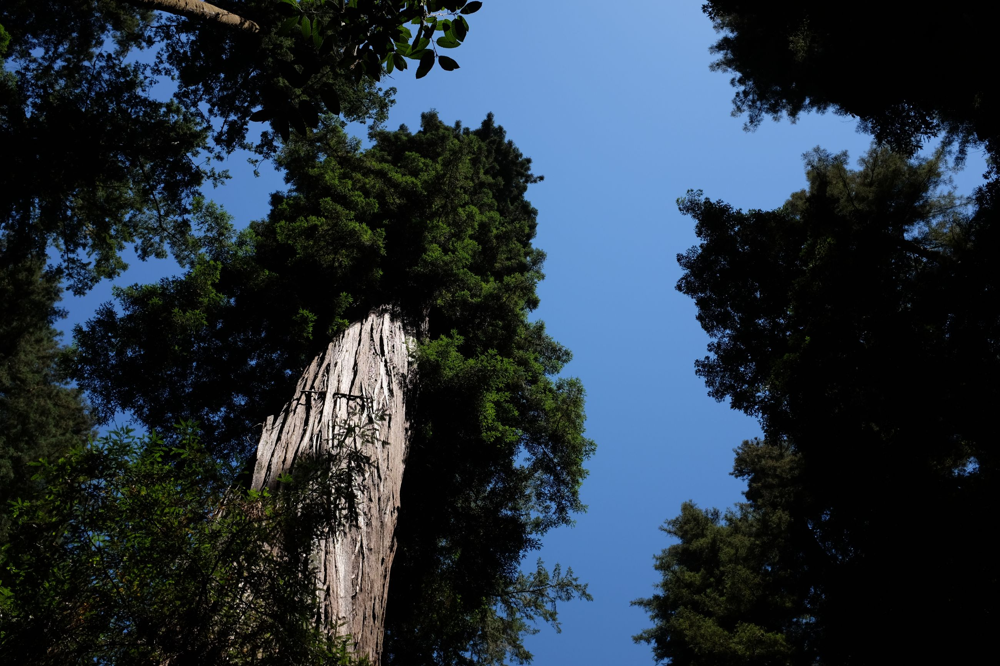
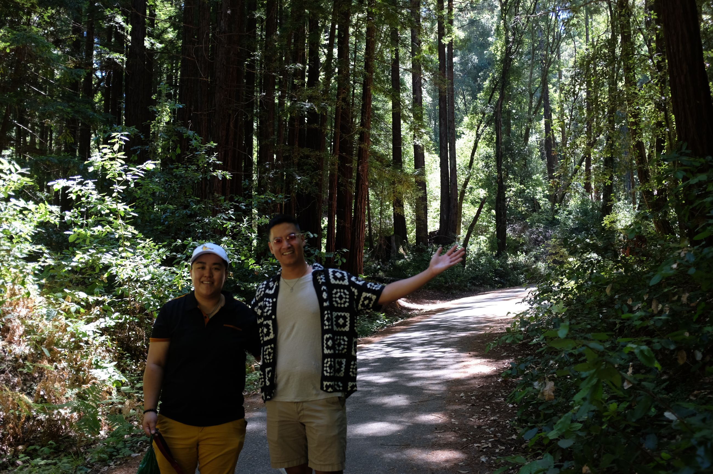
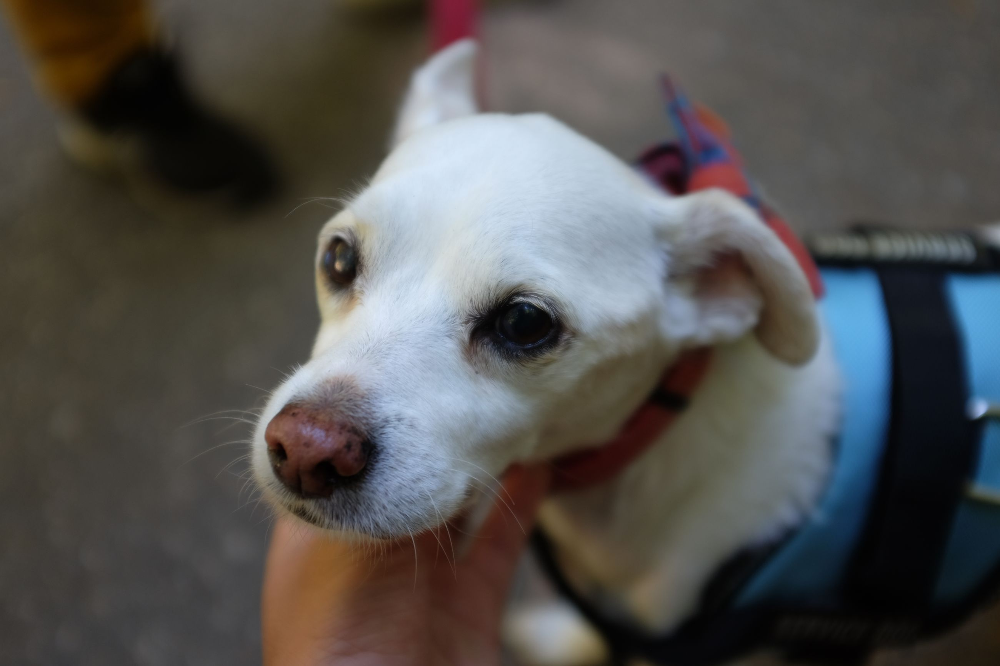
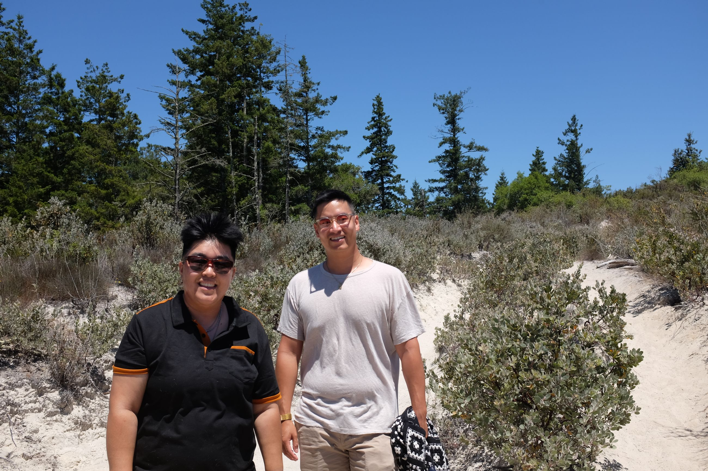
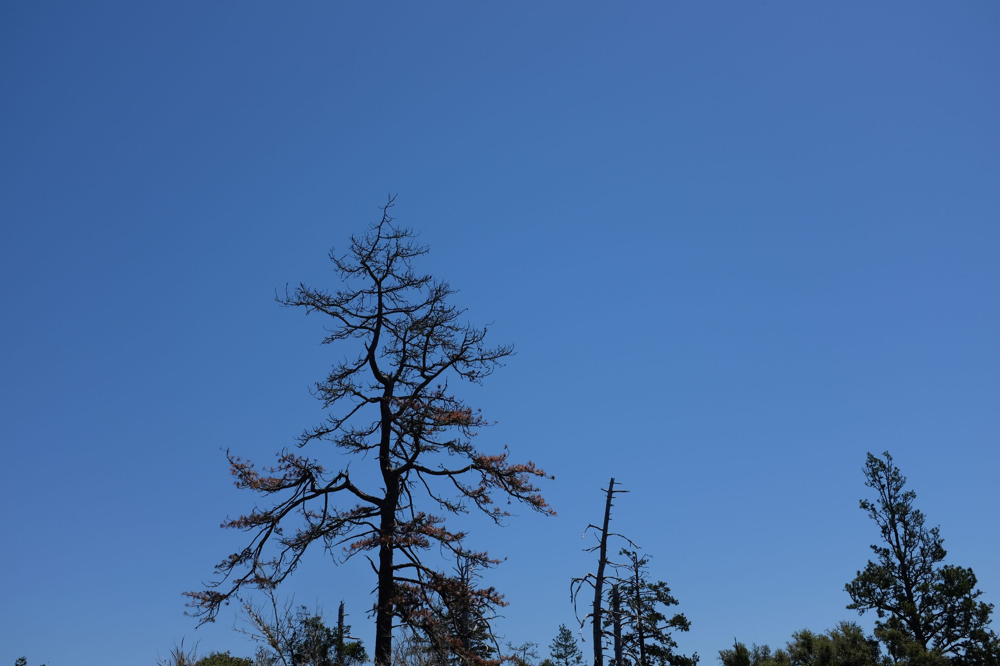
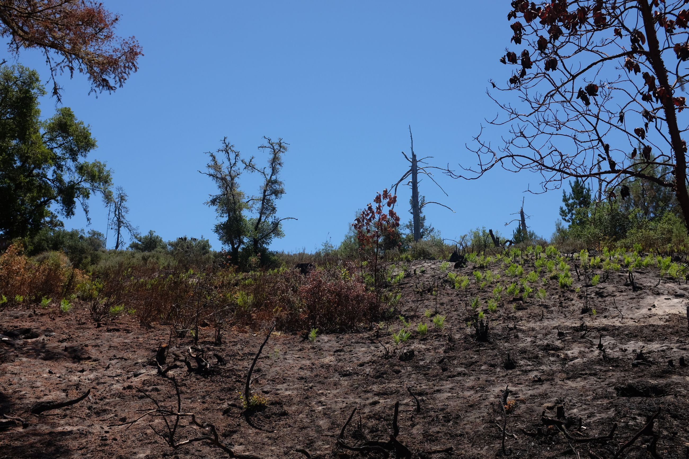
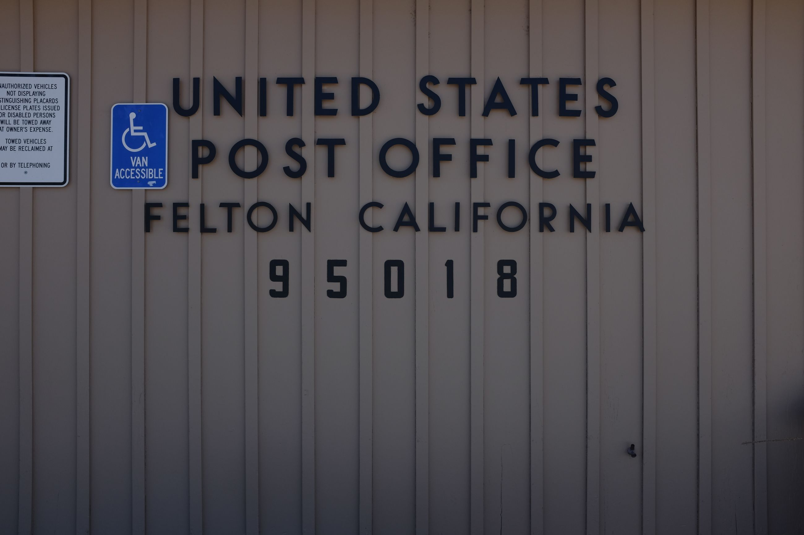

Told my friends I wanted to go to the ocean. Ended up in the forest. Having known each other for so long, that was expected.
Forgot how scenic redwoods are. Trees are amazing -- brilliant root systems, sessile life, and pushing the edge of senescence.
     
Small town America attracts me more and more. I discovered my appreciation for small towns in Taiwan, where pockets of culture have not entirely caught up to suburban or urban life. And in these pockets, always a surprise. This time, it was an old school one-man post office in the neighbouring city.
